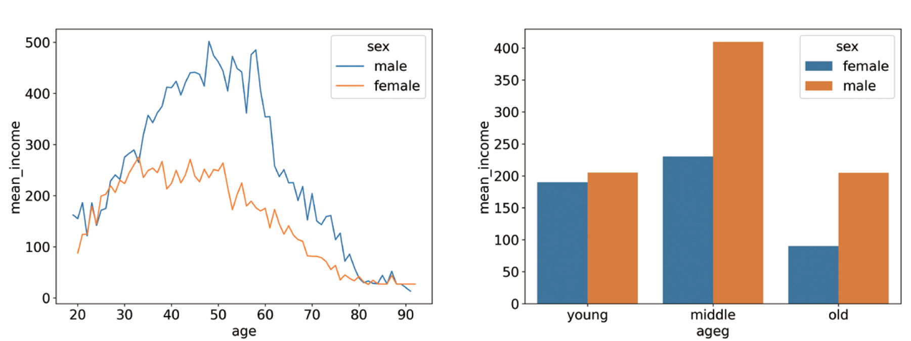
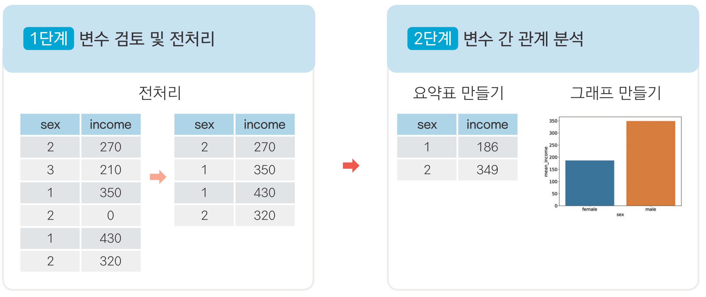

import pandas as pd
import numpy as np
import seaborn as sns{r setup, include=FALSE} # 파이썬 버전 설정 knitr::opts_chunk$set(engine.path = list( python = "C:/Users/USER/anaconda3"))
r fontawesome::fa("github", margin_left = '-0.5em') github.com/youngwoos/Doit_Python
r fontawesome::fa("facebook-square", margin_left = '-0.5em') facebook.com/groups/datacommunity
r fontawesome::fa('desktop', margin_left = '-0.5em', width = '0.9em') 슬라이드 목록
r fontawesome::fa("book", margin_left = '-0.5em') 네이버책
▪ yes24
▪ 알라딘
▪ 교보문고

09-1 ‘한국복지패널 데이터’ 분석 준비하기(link)
09-2 성별에 따른 월급 차이 - 성별에 따라 월급이 다를까?(link)
09-3 나이와 월급의 관계 - 몇 살 때 월급을 가장 많이 받을까?(link)
09-4 연령대에 따른 월급 차이 - 어떤 연령대의 월급이 가장 많을까?(link)
09-5 연령대 및 성별 월급 차이 - 성별 월급 차이는 연령대별로 다를까?(link)
09-6 직업별 월급 차이 - 어떤 직업이 월급을 가장 많이 받을까?(link)
09-7 성별 직업 빈도 - 성별에 따라 어떤 직업이 가장 많을까?(link)
09-8 종교 유무에 따른 이혼율 - 종교가 있으면 이혼을 덜 할까?(link)
09-9 지역별 연령대 비율 - 어느 지역에 노년층이 많을까?(link)
Koweps_hpwc14_2019_beta2.sav 파일을 워킹 디렉터리에 삽입sav: 통계 분석 소프트웨어 SPSS 전용 파일pyreadstat 패키지 설치하면 pandas 패키지를 이용해 불러올 수 있음`pip install pyreadstat`
`pip install koreanize-matplotlib`--------------------------------------------------------------------------- ModuleNotFoundError Traceback (most recent call last) File ~\AppData\Local\Programs\Python\Python312\Lib\site-packages\pandas\compat\_optional.py:135, in import_optional_dependency(name, extra, errors, min_version) 134 try: --> 135 module = importlib.import_module(name) 136 except ImportError: File ~\AppData\Local\Programs\Python\Python312\Lib\importlib\__init__.py:90, in import_module(name, package) 89 level += 1 ---> 90 return _bootstrap._gcd_import(name[level:], package, level) File <frozen importlib._bootstrap>:1387, in _gcd_import(name, package, level) File <frozen importlib._bootstrap>:1360, in _find_and_load(name, import_) File <frozen importlib._bootstrap>:1324, in _find_and_load_unlocked(name, import_) ModuleNotFoundError: No module named 'pyreadstat' During handling of the above exception, another exception occurred: ImportError Traceback (most recent call last) Cell In[103], line 2 1 # 데이터 불러오기 ----> 2 raw_welfare = pd.read_spss('Koweps_hpwc14_2019_beta2.sav') 3 4 # 복사본 만들기 5 welfare = raw_welfare.copy() File ~\AppData\Local\Programs\Python\Python312\Lib\site-packages\pandas\io\spss.py:58, in read_spss(path, usecols, convert_categoricals, dtype_backend) 22 def read_spss( 23 path: str | Path, 24 usecols: Sequence[str] | None = None, 25 convert_categoricals: bool = True, 26 dtype_backend: DtypeBackend | lib.NoDefault = lib.no_default, 27 ) -> DataFrame: 28 """ 29 Load an SPSS file from the file path, returning a DataFrame. 30 (...) 56 >>> df = pd.read_spss("spss_data.sav") # doctest: +SKIP 57 """ ---> 58 pyreadstat = import_optional_dependency("pyreadstat") 59 check_dtype_backend(dtype_backend) 61 if usecols is not None: File ~\AppData\Local\Programs\Python\Python312\Lib\site-packages\pandas\compat\_optional.py:138, in import_optional_dependency(name, extra, errors, min_version) 136 except ImportError: 137 if errors == "raise": --> 138 raise ImportError(msg) 139 return None 141 # Handle submodules: if we have submodule, grab parent module from sys.modules ImportError: Missing optional dependency 'pyreadstat'. Use pip or conda to install pyreadstat.
--------------------------------------------------------------------------- NameError Traceback (most recent call last) Cell In[104], line 1 ----> 1 welfare = welfare.rename(columns = {'h14_g3' : 'sex', # 성별 2 'h14_g4' : 'birth', # 태어난 연도 3 'h14_g10' : 'marriage_type', # 혼인 상태 4 'h14_g11' : 'religion', # 종교 NameError: name 'welfare' is not defined
Koweps_Codebook_2019.xlsx 참고
--------------------------------------------------------------------------- NameError Traceback (most recent call last) Cell In[105], line 1 ----> 1 welfare['sex'].dtypes # 변수 타입 출력 NameError: name 'welfare' is not defined
--------------------------------------------------------------------------- NameError Traceback (most recent call last) Cell In[107], line 2 1 # 이상치 확인 ----> 2 welfare['sex'].value_counts() NameError: name 'welfare' is not defined
--------------------------------------------------------------------------- NameError Traceback (most recent call last) Cell In[108], line 2 1 # 이상치 결측 처리 ----> 2 welfare['sex'] = np.where(welfare['sex'] == 9, np.nan, welfare['sex']) 3 4 # 결측치 확인 5 welfare['sex'].isna().sum() NameError: name 'welfare' is not defined
--------------------------------------------------------------------------- NameError Traceback (most recent call last) Cell In[109], line 2 1 # 성별 항목 이름 부여 ----> 2 welfare['sex'] = np.where(welfare['sex'] == 1, 'male', 'female') 3 4 # 빈도 구하기 5 welfare['sex'].value_counts() NameError: name 'welfare' is not defined
--------------------------------------------------------------------------- NameError Traceback (most recent call last) Cell In[110], line 2 1 # 빈도 막대 그래프 만들기 ----> 2 sns.countplot(data = welfare, x = 'sex') NameError: name 'welfare' is not defined
--------------------------------------------------------------------------- NameError Traceback (most recent call last) Cell In[111], line 1 ----> 1 welfare['income'].dtypes # 변수 타입 출력 NameError: name 'welfare' is not defined
--------------------------------------------------------------------------- NameError Traceback (most recent call last) Cell In[114], line 1 ----> 1 welfare['income'].describe() # 이상치 확인 NameError: name 'welfare' is not defined
--------------------------------------------------------------------------- NameError Traceback (most recent call last) Cell In[116], line 2 1 # 이상치 결측 처리 ----> 2 welfare['income'] = np.where(welfare['income'] == 9999, np.nan, welfare['income']) 3 4 # 결측치 확인 5 welfare['income'].isna().sum() NameError: name 'welfare' is not defined
--------------------------------------------------------------------------- NameError Traceback (most recent call last) Cell In[118], line 1 ----> 1 sex_income = welfare.dropna(subset = 'income') \ 2 .groupby('sex', as_index = False) \ 3 .agg(mean_income = ('income', 'mean')) 4 sex_income NameError: name 'welfare' is not defined
--------------------------------------------------------------------------- NameError Traceback (most recent call last) Cell In[119], line 2 1 # 막대 그래프 만들기 ----> 2 sns.barplot(data = sex_income, x = 'sex', y = 'mean_income') NameError: name 'sex_income' is not defined
--------------------------------------------------------------------------- NameError Traceback (most recent call last) Cell In[120], line 1 ----> 1 welfare['birth'].dtypes # 변수 타입 출력 NameError: name 'welfare' is not defined
--------------------------------------------------------------------------- NameError Traceback (most recent call last) Cell In[123], line 1 ----> 1 welfare['birth'].describe() # 이상치 확인 NameError: name 'welfare' is not defined
--------------------------------------------------------------------------- NameError Traceback (most recent call last) Cell In[125], line 2 1 # 이상치 결측 처리 ----> 2 welfare['birth'] = np.where(welfare['birth'] == 9999, np.nan, welfare['birth']) 3 4 # 결측치 확인 5 welfare['birth'].isna().sum() NameError: name 'welfare' is not defined
--------------------------------------------------------------------------- NameError Traceback (most recent call last) Cell In[126], line 1 ----> 1 welfare = welfare.assign(age = 2019 - welfare['birth'] + 1) # 나이 변수 만들기 2 welfare['age'].describe() # 요약 통계량 구하기 NameError: name 'welfare' is not defined
--------------------------------------------------------------------------- NameError Traceback (most recent call last) Cell In[129], line 2 1 # 나이별 월급 평균표 만들기 ----> 2 age_income = welfare.dropna(subset = 'income') \ 3 .groupby('age') \ 4 .agg(mean_income = ('income', 'mean')) 5 NameError: name 'welfare' is not defined
--------------------------------------------------------------------------- NameError Traceback (most recent call last) Cell In[130], line 2 1 # 선 그래프 만들기 ----> 2 sns.lineplot(data = age_income, x = 'age', y = 'mean_income') NameError: name 'age_income' is not defined
--------------------------------------------------------------------------- NameError Traceback (most recent call last) Cell In[132], line 2 1 # 연령대 변수 만들기 ----> 2 welfare = welfare.assign(ageg = np.where(welfare['age'] < 30, 'young', 3 np.where(welfare['age'] <= 59, 'middle', 'old'))) 4 5 # 빈도 구하기 NameError: name 'welfare' is not defined
--------------------------------------------------------------------------- NameError Traceback (most recent call last) Cell In[133], line 2 1 # 빈도 막대 그래프 만들기 ----> 2 sns.countplot(data = welfare, x = 'ageg') NameError: name 'welfare' is not defined
--------------------------------------------------------------------------- NameError Traceback (most recent call last) Cell In[135], line 2 1 # 연령대별 월급 평균표 만들기 ----> 2 ageg_income = welfare.dropna(subset = 'income') \ 3 .groupby('ageg', as_index = False) \ 4 .agg(mean_income = ('income', 'mean')) 5 ageg_income NameError: name 'welfare' is not defined
--------------------------------------------------------------------------- NameError Traceback (most recent call last) Cell In[136], line 2 1 # 막대 그래프 만들기 ----> 2 sns.barplot(data = ageg_income, x = 'ageg', y = 'mean_income') NameError: name 'ageg_income' is not defined
--------------------------------------------------------------------------- NameError Traceback (most recent call last) Cell In[137], line 2 1 # 막대 정렬하기 ----> 2 sns.barplot(data = ageg_income, x = 'ageg', y = 'mean_income', 3 order = ['young', 'middle', 'old']) NameError: name 'ageg_income' is not defined
--------------------------------------------------------------------------- NameError Traceback (most recent call last) Cell In[139], line 2 1 # 연령대 및 성별 평균표 만들기 ----> 2 sex_income = welfare.dropna(subset = 'income') \ 3 .groupby(['ageg', 'sex'], as_index = False) \ 4 .agg(mean_income = ('income', 'mean')) 5 sex_income NameError: name 'welfare' is not defined
--------------------------------------------------------------------------- NameError Traceback (most recent call last) Cell In[140], line 2 1 # 막대 그래프 만들기 ----> 2 sns.barplot(data = sex_income, x = 'ageg', y = 'mean_income', hue = 'sex', 3 order = ['young', 'middle', 'old']) NameError: name 'sex_income' is not defined
--------------------------------------------------------------------------- NameError Traceback (most recent call last) Cell In[142], line 2 1 # 나이 및 성별 월급 평균표 만들기 ----> 2 sex_age = welfare.dropna(subset = 'income') \ 3 .groupby(['age', 'sex'], as_index = False) \ 4 .agg(mean_income = ('income', 'mean')) 5 sex_age.head() NameError: name 'welfare' is not defined
--------------------------------------------------------------------------- NameError Traceback (most recent call last) Cell In[143], line 2 1 # 선 그래프 만들기 ----> 2 sns.lineplot(data = sex_age, x = 'age', y = 'mean_income', hue = 'sex') NameError: name 'sex_age' is not defined
--------------------------------------------------------------------------- NameError Traceback (most recent call last) Cell In[144], line 1 ----> 1 welfare['code_job'].dtypes # 변수 타입 출력 NameError: name 'welfare' is not defined
--------------------------------------------------------------------------- FileNotFoundError Traceback (most recent call last) Cell In[146], line 1 ----> 1 list_job = pd.read_excel('Koweps_Codebook_2019.xlsx', sheet_name = '직종코드') 2 list_job.head() File ~\AppData\Local\Programs\Python\Python312\Lib\site-packages\pandas\io\excel\_base.py:495, in read_excel(io, sheet_name, header, names, index_col, usecols, dtype, engine, converters, true_values, false_values, skiprows, nrows, na_values, keep_default_na, na_filter, verbose, parse_dates, date_parser, date_format, thousands, decimal, comment, skipfooter, storage_options, dtype_backend, engine_kwargs) 493 if not isinstance(io, ExcelFile): 494 should_close = True --> 495 io = ExcelFile( 496 io, 497 storage_options=storage_options, 498 engine=engine, 499 engine_kwargs=engine_kwargs, 500 ) 501 elif engine and engine != io.engine: 502 raise ValueError( 503 "Engine should not be specified when passing " 504 "an ExcelFile - ExcelFile already has the engine set" 505 ) File ~\AppData\Local\Programs\Python\Python312\Lib\site-packages\pandas\io\excel\_base.py:1550, in ExcelFile.__init__(self, path_or_buffer, engine, storage_options, engine_kwargs) 1548 ext = "xls" 1549 else: -> 1550 ext = inspect_excel_format( 1551 content_or_path=path_or_buffer, storage_options=storage_options 1552 ) 1553 if ext is None: 1554 raise ValueError( 1555 "Excel file format cannot be determined, you must specify " 1556 "an engine manually." 1557 ) File ~\AppData\Local\Programs\Python\Python312\Lib\site-packages\pandas\io\excel\_base.py:1402, in inspect_excel_format(content_or_path, storage_options) 1399 if isinstance(content_or_path, bytes): 1400 content_or_path = BytesIO(content_or_path) -> 1402 with get_handle( 1403 content_or_path, "rb", storage_options=storage_options, is_text=False 1404 ) as handle: 1405 stream = handle.handle 1406 stream.seek(0) File ~\AppData\Local\Programs\Python\Python312\Lib\site-packages\pandas\io\common.py:882, in get_handle(path_or_buf, mode, encoding, compression, memory_map, is_text, errors, storage_options) 873 handle = open( 874 handle, 875 ioargs.mode, (...) 878 newline="", 879 ) 880 else: 881 # Binary mode --> 882 handle = open(handle, ioargs.mode) 883 handles.append(handle) 885 # Convert BytesIO or file objects passed with an encoding FileNotFoundError: [Errno 2] No such file or directory: 'Koweps_Codebook_2019.xlsx'
--------------------------------------------------------------------------- NameError Traceback (most recent call last) Cell In[148], line 2 1 # welfare에 list_job 결합하기 ----> 2 welfare = welfare.merge(list_job, how = 'left', on = 'code_job') 3 4 # code_job 결측치 제거하고 code_job, job 출력 5 welfare.dropna(subset = ['code_job'])[['code_job', 'job']].head() NameError: name 'welfare' is not defined
--------------------------------------------------------------------------- NameError Traceback (most recent call last) Cell In[150], line 2 1 # 직업별 월급 평균표 만들기 ----> 2 job_income = welfare.dropna(subset = ['job', 'income']) \ 3 .groupby('job', as_index = False) \ 4 .agg(mean_income = ('income', 'mean')) 5 job_income.head() NameError: name 'welfare' is not defined
(1) 월급이 많은 직업
--------------------------------------------------------------------------- NameError Traceback (most recent call last) Cell In[151], line 2 1 # 상위 10위 추출 ----> 2 top10 = job_income.sort_values('mean_income', ascending = False).head(10) 3 top10 NameError: name 'job_income' is not defined
--------------------------------------------------------------------------- NameError Traceback (most recent call last) Cell In[152], line 6 2 import matplotlib.pyplot as plt 3 plt.rcParams.update({'font.family' : 'Malgun Gothic'}) 4 5 # 막대 그래프 만들기 ----> 6 sns.barplot(data = top10, y = 'job', x = 'mean_income') NameError: name 'top10' is not defined
(2) 월급이 적은 직업
--------------------------------------------------------------------------- NameError Traceback (most recent call last) Cell In[153], line 2 1 # 하위 10위 추출 ----> 2 bottom10 = job_income.sort_values('mean_income').head(10) 3 bottom10 NameError: name 'job_income' is not defined
--------------------------------------------------------------------------- NameError Traceback (most recent call last) Cell In[154], line 2 1 # 막대 그래프 만들기 ----> 2 sns.barplot(data = bottom10, y = 'job', x = 'mean_income') \ 3 .set(xlim = [0, 800]); 4 5 plt.show() NameError: name 'bottom10' is not defined
--------------------------------------------------------------------------- NameError Traceback (most recent call last) Cell In[156], line 2 1 # 남성 직업 빈도 상위 10개 추출 ----> 2 job_male = welfare.dropna(subset = ['job']) \ 3 .query('sex == "male"') \ 4 .groupby('job', as_index = False) \ 5 .agg(n = ('job', 'count')) \ NameError: name 'welfare' is not defined
--------------------------------------------------------------------------- NameError Traceback (most recent call last) Cell In[158], line 2 1 # 여성 직업 빈도 상위 10개 추출 ----> 2 job_female = welfare.dropna(subset = ['job']) \ 3 .query('sex == "female"') \ 4 .groupby('job', as_index = False) \ 5 .agg(n = ('job', 'count')) \ NameError: name 'welfare' is not defined
--------------------------------------------------------------------------- NameError Traceback (most recent call last) Cell In[159], line 2 1 # 남성 직업 빈도 막대 그래프 만들기 ----> 2 sns.barplot(data = job_male, y = 'job', x = 'n').set(xlim = [0, 500]); 3 plt.show() NameError: name 'job_male' is not defined
--------------------------------------------------------------------------- NameError Traceback (most recent call last) Cell In[160], line 2 1 # 여성 직업 빈도 막대 그래프 만들기 ----> 2 sns.barplot(data = job_female, y = 'job', x = 'n').set(xlim = [0, 500]); 3 plt.show() NameError: name 'job_female' is not defined
--------------------------------------------------------------------------- NameError Traceback (most recent call last) Cell In[161], line 1 ----> 1 welfare['religion'].dtypes # 변수 타입 출력 NameError: name 'welfare' is not defined
--------------------------------------------------------------------------- NameError Traceback (most recent call last) Cell In[163], line 2 1 # 종교 유무 이름 부여 ----> 2 welfare['religion'] = np.where(welfare['religion'] == 1, 'yes', 'no') 3 4 # 빈도 구하기 5 welfare['religion'].value_counts() NameError: name 'welfare' is not defined
--------------------------------------------------------------------------- NameError Traceback (most recent call last) Cell In[164], line 2 1 # 막대 그래프 만들기 ----> 2 sns.countplot(data = welfare, x = 'religion') NameError: name 'welfare' is not defined
--------------------------------------------------------------------------- NameError Traceback (most recent call last) Cell In[165], line 1 ----> 1 welfare['marriage_type'].dtypes # 변수 타입 출력 NameError: name 'welfare' is not defined
--------------------------------------------------------------------------- NameError Traceback (most recent call last) Cell In[167], line 2 1 # 이혼 여부 변수 만들기 ----> 2 welfare['marriage'] = np.where(welfare['marriage_type'] == 1, 'marriage', 3 np.where(welfare['marriage_type'] == 3, 'divorce', 'etc')) NameError: name 'welfare' is not defined
--------------------------------------------------------------------------- NameError Traceback (most recent call last) Cell In[169], line 2 1 # 이혼 여부별 빈도 ----> 2 n_divorce = welfare.groupby('marriage', as_index = False) \ 3 .agg(n = ('marriage', 'count')) 4 n_divorce NameError: name 'welfare' is not defined
--------------------------------------------------------------------------- NameError Traceback (most recent call last) Cell In[170], line 2 1 # 막대 그래프 만들기 ----> 2 sns.barplot(data = n_divorce, x = 'marriage', y = 'n') NameError: name 'n_divorce' is not defined
--------------------------------------------------------------------------- NameError Traceback (most recent call last) Cell In[172], line 1 ----> 1 rel_div = welfare.query('marriage != "etc"') \ 2 .groupby('religion', as_index = False) \ 3 ['marriage'] \ 4 .value_counts(normalize = True) NameError: name 'welfare' is not defined
--------------------------------------------------------------------------- NameError Traceback (most recent call last) Cell In[174], line 1 ----> 1 rel_div = rel_div.query('marriage == "divorce"') \ 2 .assign(proportion = rel_div['proportion'] * 100) \ 3 .round(1) 4 rel_div NameError: name 'rel_div' is not defined
--------------------------------------------------------------------------- NameError Traceback (most recent call last) Cell In[175], line 2 1 # 막대 그래프 만들기 ----> 2 sns.barplot(data = rel_div, x = 'religion', y = 'proportion') NameError: name 'rel_div' is not defined
--------------------------------------------------------------------------- NameError Traceback (most recent call last) Cell In[177], line 1 ----> 1 age_div = welfare.query('marriage != "etc"') \ 2 .groupby('ageg', as_index = False) \ 3 ['marriage'] \ 4 .value_counts(normalize = True) NameError: name 'welfare' is not defined
--------------------------------------------------------------------------- NameError Traceback (most recent call last) Cell In[179], line 2 1 # 연령대 및 이혼 여부별 빈도 ----> 2 welfare.query('marriage != "etc"') \ 3 .groupby('ageg', as_index = False) \ 4 ['marriage'] \ 5 .value_counts() NameError: name 'welfare' is not defined
--------------------------------------------------------------------------- NameError Traceback (most recent call last) Cell In[181], line 1 ----> 1 age_div = age_div.query('ageg != "young" & marriage == "divorce"') \ 2 .assign(proportion = age_div['proportion'] * 100) \ 3 .round(1) 4 age_div NameError: name 'age_div' is not defined
--------------------------------------------------------------------------- NameError Traceback (most recent call last) Cell In[182], line 2 1 # 막대 그래프 만들기 ----> 2 sns.barplot(data = age_div, x = 'ageg', y = 'proportion') NameError: name 'age_div' is not defined
--------------------------------------------------------------------------- NameError Traceback (most recent call last) Cell In[184], line 1 ----> 1 age_rel_div = welfare.query('marriage != "etc" & ageg != "young"') \ 2 .groupby(['ageg', 'religion'], as_index = False) \ 3 ['marriage'] \ 4 .value_counts(normalize = True) NameError: name 'welfare' is not defined
--------------------------------------------------------------------------- NameError Traceback (most recent call last) Cell In[186], line 1 ----> 1 age_rel_div = age_rel_div.query('marriage == "divorce"') \ 2 .assign(proportion = age_rel_div['proportion'] * 100) \ 3 .round(1) 4 NameError: name 'age_rel_div' is not defined
--------------------------------------------------------------------------- NameError Traceback (most recent call last) Cell In[187], line 2 1 # 막대 그래프 만들기 ----> 2 sns.barplot(data = age_rel_div, x = 'ageg', y = 'proportion', hue = 'religion') NameError: name 'age_rel_div' is not defined
--------------------------------------------------------------------------- NameError Traceback (most recent call last) Cell In[188], line 1 ----> 1 welfare['code_region'].dtypes # 변수 타입 출력 NameError: name 'welfare' is not defined
--------------------------------------------------------------------------- NameError Traceback (most recent call last) Cell In[191], line 2 1 # 지역명 변수 추가 ----> 2 welfare = welfare.merge(list_region, how = 'left', on = 'code_region') 3 welfare[['code_region', 'region']].head() NameError: name 'welfare' is not defined
--------------------------------------------------------------------------- NameError Traceback (most recent call last) Cell In[193], line 1 ----> 1 region_ageg = welfare.groupby('region', as_index = False) \ 2 ['ageg'] \ 3 .value_counts(normalize = True) 4 NameError: name 'welfare' is not defined
--------------------------------------------------------------------------- NameError Traceback (most recent call last) Cell In[195], line 1 ----> 1 region_ageg = region_ageg.assign(proportion = region_ageg['proportion'] * 100) \ 2 .round(1) NameError: name 'region_ageg' is not defined
--------------------------------------------------------------------------- NameError Traceback (most recent call last) Cell In[196], line 2 1 # 막대 그래프 만들기 ----> 2 p = sns.barplot(data = region_ageg, y = 'region', x = 'proportion', hue = 'ageg') 3 plt.tight_layout() # 여백 4 plt.show() NameError: name 'region_ageg' is not defined
--------------------------------------------------------------------------- NameError Traceback (most recent call last) Cell In[197], line 3 1 # 피벗 2 pivot_df = \ ----> 3 region_ageg[['region', 'ageg', 'proportion']].pivot(index = 'region', 4 columns = 'ageg', 5 values = 'proportion') 6 pivot_df NameError: name 'region_ageg' is not defined
--------------------------------------------------------------------------- NameError Traceback (most recent call last) Cell In[198], line 2 1 # 막대 그래프 만들기 ----> 2 p = pivot_df.plot.barh(stacked = True) 3 plt.tight_layout() # 여백 4 plt.show() NameError: name 'pivot_df' is not defined
--------------------------------------------------------------------------- NameError Traceback (most recent call last) Cell In[199], line 2 1 # 노년층 비율 기준 정렬, 변수 순서 바꾸기 ----> 2 reorder_df = pivot_df.sort_values('old')[['young', 'middle', 'old']] 3 reorder_df NameError: name 'pivot_df' is not defined
--------------------------------------------------------------------------- NameError Traceback (most recent call last) Cell In[200], line 2 1 # 막대 그래프 만들기 ----> 2 p = reorder_df.plot.barh(stacked = True) 3 plt.tight_layout() # 여백 4 plt.show() NameError: name 'reorder_df' is not defined